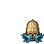

Pokédex / #139

Omastar #139
RockWater
Its tentacles are highly developed as if they are hands and feet. As soon as it ensnares prey, it bites.
Generation 1 · Kanto

Stats
| Attack | 60 | |
|---|---|---|
| Defense | 125 | |
| Sp. Atk | 115 | |
| Sp. Def | 70 |
In the wild
| Wild level | 70–80 |
|---|---|
| HP | 70 |
| Experience | 15 |
| Egg groups | – |
Evolution
- Evolves from Omanyte at level 35.
Moves
| Level | Move | Type | Category | Power | Energy | Cooldown | Effect | |
|---|---|---|---|---|---|---|---|---|
| 1 | Tackle | Normal | Physical | 15 | 15 | 1s | Tackle is one of the most common and basic moves a Pokemon learns. It deals damage with no additional effects. | |
| 5 | Bite | Dark | Physical | 60 | 60 | 9s | Bite deals damage and has a 30% chance of causing the target to flinch. | |
| 10 | Water Gun | Water | Special | 40 | 45 | 9s | Water Gun inflicts damage and has no secondary effect. | |
| 15 | Mud Shot | Ground | Special | 55 | 60 | 9s | Mud Shot deals damage and lowers the target's Speed by one stage. | |
| 20 | Protect | Normal | Status | – | 70 | 60s | Protect raises the user's Defense by two stages. | |
| 25 | Ancient Power | Rock | Special | 60 | 70 | 14s | Ancient Power inflicts damage and has a 10% chance of raising all of the user's stats by one stage. | |
| 30 | Scald | Water | Special | 80 | 90 | 19s | The user shoots boiling hot water at its target. This may also leave the target with a burn. | |
| 40 | Brine | Water | Special | 65 | 80 | 15s | Brine inflicts damage, and its power doubles to 130 when the target is at or below 50% health. | |
| 45 | Rollout | Rock | Physical | 5 | 70 | 35s | Rollout inflicts damage over five turns and raises the user's Speed by two stages. | |
| 50 | Rock Blast | Rock | Physical | 25 | 40 | 5s | Rock Blast inflicts damage, hitting the target 2-5 times per use. | |
| 55 | Stone Edge | Rock | Physical | 100 | 100 | 15s | Stone Edge deals damage and has an increased critical hit ratio. | |
| 60 | Hydro Pump | Water | Special | 110 | 120 | 27s | Hydro Pump inflicts damage and has no secondary effect. | |
| 65 | Shell Smash | Normal | Status | – | 70 | 30s | The user breaks its shell, which lowers Defense and Sp. Def stats but sharply raises its Attack, Sp. Atk, and Speed stats. | |
| 70 | Bide | Normal | Physical | – | 200 | 30s | The user of Bide 'stores energy' for 2 turns. At the end of the second turn the Pokemon 'unleashes energy', dealing twice the HP damage it received. |
Field abilities
Rock ClimbWaterfallSurfDiveHeadbutt
Special abilities
Swift SwimShell Armor
Egg moves
Aurora BeamBideBubblebeamHazeKnock OffMuddy WaterReflect TypeSlamSpikesSupersonicToxic SpikesWater PulseWhirlpoolWring Out
Technical machines
BideBlizzardBody SlamBubblebeamDouble EdgeDouble TeamHailHeadbuttHyper BeamIce BeamIcy WindMimicRageRain DanceReflectRestRock SlideRock TombSandstormSeismic TossSkull BashSoftboiledSubmissionSubstituteTake DownToxicWater GunWater Pulse
Drops
| Item | Amount | Chance | |
|---|---|---|---|
| omastar doll | 1 | 0.1% | |
| Splash Plate | 1 | 0.025% | |
| Stone Plate | 1 | 0.025% | |
| TM 12 | 1 | 0.01% | |
| TM 54 | 1 | 0.01% | |
| held hard stone | 1 | 0.01% | |
| held mystic water | 1 | 0.01% |